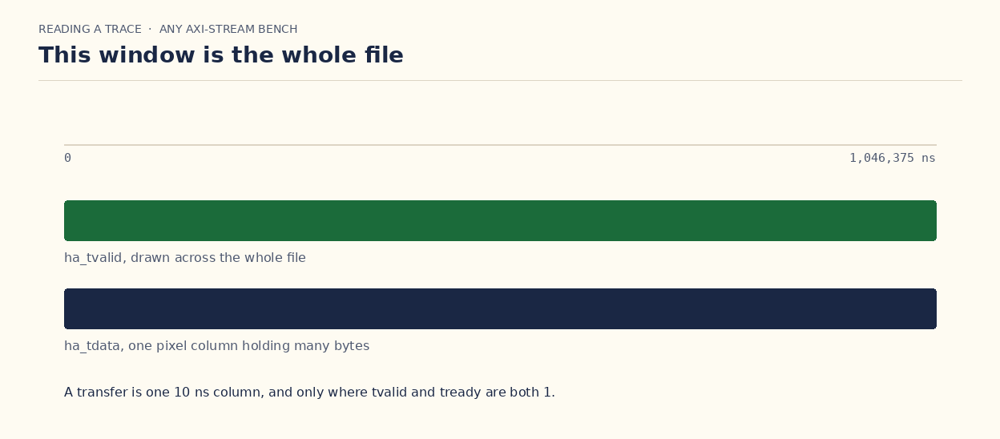
The trace ends at 1,046,375 ns. That is the last time in the file, not one beat. A clock here is 10 ns. Until one clock is one column, the green line is many transfers stacked together.
Previous1 of 8
make nics · first frames
One two-NIC run, in the order the bench actually starts. The table is empty. The rules are copied into both twins. The NICs attach. Then host A and host B exchange frames, and mis stays 0.
Reset rises before the pcap opens. l2_set_age, l2_set_len, and l2_set_mcast copy the plusargs into the C table, and l2_reset clears it. The SystemVerilog table clears on the same reset. On make nics those plusargs are the defaults: aging off, 12 to 2048 bytes, no static multicast group.
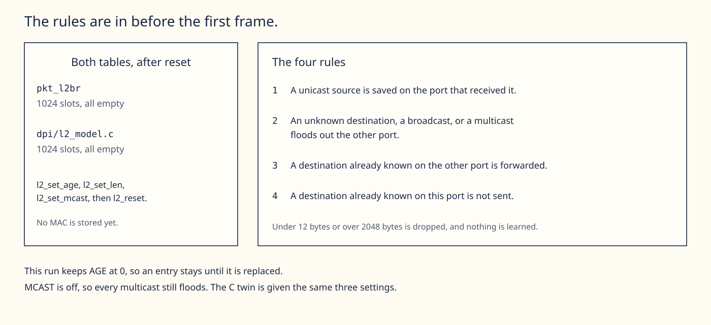
make nics places one example NIC on each port. NIC A sends into a_s_* and receives from a_m_*. NIC B sends into b_s_* and receives from b_m_*. The pcap is the host behind each NIC. A frame from one host reaches the other NIC only by crossing the bridge.
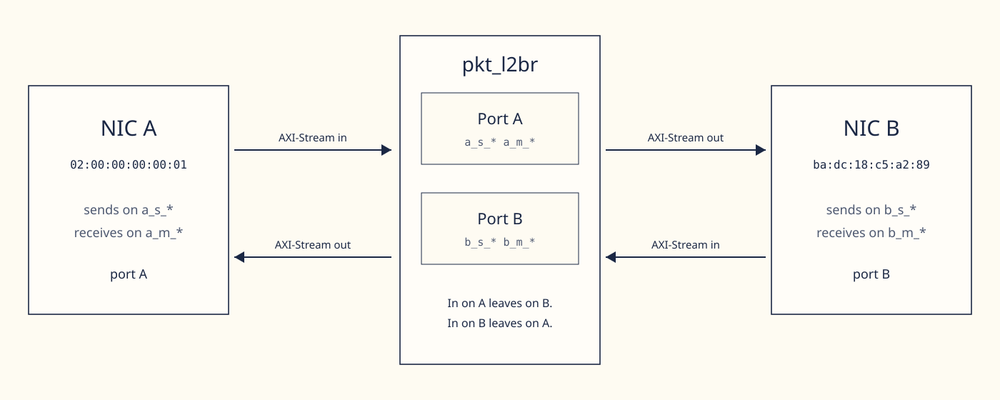
These are the four AXI-Stream ends of pkt_l2br. The * is the beat: tdata, tkeep, tvalid, tready, tstart, tlast, tuser, and tuser_err. s is a slave, so the bytes go into the bridge. m is a master, so the bytes come out. A beat counts only when tvalid and tready are both high. ready_mask and pause_en sit beside each slave and are not part of the star.
| Name | Direction | Who drives the bytes |
|---|---|---|
a_s_* | Into port A | NIC A, or the pcap bench |
a_m_* | Out of port A | The bridge, toward NIC A |
b_s_* | Into port B | NIC B, or the pcap bench |
b_m_* | Out of port B | The bridge, toward NIC B |
A frame that arrives on a_s_* and is flooded or forwarded leaves on b_m_*. A frame that arrives on b_s_* and is flooded or forwarded leaves on a_m_*. A filtered or dropped frame does not appear on the other master.
Host A is 02:00:00:00:00:01 on port A. Host B is ba:dc:18:c5:a2:89 on port B. Packet 1 is 74 bytes from A to B. The source is saved on port A, the destination misses, and NIC B receives the flood. Packet 2 is 74 bytes from B to A. The source is saved on port B, host A is already on port A, and NIC A receives the forward.
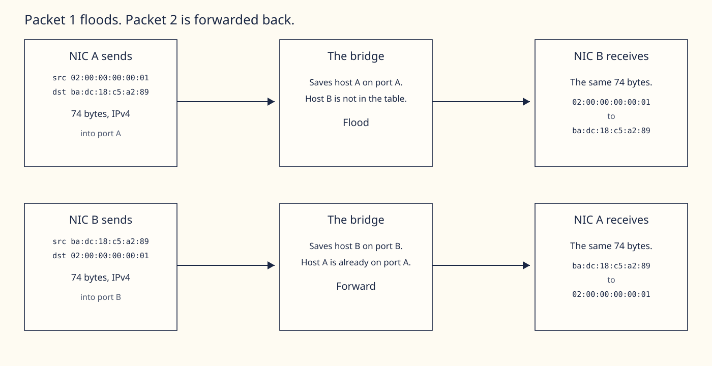
The recording is the first 8 frames of that run, slow enough to read. Amber is a frame that NIC sent into the bridge. Blue is a frame that arrived from the bridge. In the simulator the receive line prints when the last byte lands, which can be under the next packet header. NIC A sent 5 and received 3. NIC B sent 3 and received 5.
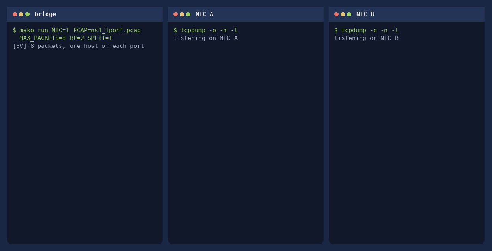
rx_a=5 rx_b=3 tx_a=3 tx_b=5 flood=1 fwd=7 filter=0 mis=0. The recording.After a run, make wave opens simulation_trace.vcd in GTKWave. The trace is one flat list. Group the wires by port, then follow one frame from tstart to tlast. In the VCD the testbench names are a_* and b_*, not a_s_* and b_s_*. a_* is the slave into port A. b_* is the slave into port B.
Every port has the same seven wires, each with its own prefix. There is no shared tvalid. Host A is ha_tvalid, into port A is a_tvalid, out of port B is b_m_tvalid, and the same pattern holds for tready, tstart, tlast, tkeep, tdata, and tuser. The error bit on that prefix is terr.
GTKWave's filter box sits above the signal tree. Type one prefix, append those traces, then select just those rows in the wave list, right-click, and choose Group. Clear the filter before the next group. a_ also matches ha_ and a_m_, so use the prefixes in the table.
| Group | Signals | What you are looking at |
|---|---|---|
| Host A | ha_ | Bytes the bench hands NIC A |
| Into port A | a_t | NIC A sending into the bridge (a_s_*) |
| Out of port B | b_m_ | The bridge sending toward NIC B |
| Host B | hb_ | Bytes the bench hands NIC B |
| Into port B | b_t | NIC B sending into the bridge (b_s_*) |
| Out of port A | a_m_ | The bridge sending toward NIC A |
Set each tdata to hex. A beat is only the cycles where that group's tvalid and tready are both 1. tready alone is not a transfer. Zoom to one pulse of that group's tstart, then across to its tlast. That span is one frame.
A window that runs from 0 to 1,046,375 ns is the whole file. One clock in this bench is 10 ns, so that green band is many transfers drawn on top of each other. In that file ha_* and a_* are the same wires, because the example NICs were not compiled in. The recording below is a two-frame run with a NIC on each port, so the host, NIC A, and NIC B fall at three different times. The bytes are the first frame of ns1_iperf.pcap.
tvalid and tready are both 1. The times below are in nanoseconds because this clock is 10 ns. GTKWave can show picoseconds, nanoseconds, or microseconds. Pick the unit that makes one rising edge one column.ha_tstart is 1 and both pins are 1. The byte is ba, the first byte of the destination. That column is one transfer. The next column is dc.ha_tlast. It rises at 775 ns on byte 0a. Both pins stayed high, so the host made 74 transfers. The frame is 74 bytes.a_* after it has stored the frame. At 795 ns a_tvalid is 1 and a_tready is 0, so dc does not move. At 805 ns both pins are 1, and dc enters the bridge.b_m_tstart is 1 and both pins are 1. NIC B takes ba, then the rest of the same 74 bytes. Same checks, next port.A frame on ha_* shows up later on a_*, after NIC A has stored it and started sending. If that frame is flooded or forwarded, the same bytes then show up on b_m_*. A frame on hb_* shows up on b_*, and if it is flooded or forwarded, on a_m_*. If the frame is filtered or dropped, the other master stays quiet through that tlast. On a port-A-only run, a_* is busy and b_m_* pulses only for the one flood.
Each picture stays up until you choose the next step. make run NIC=1 PCAP=ns1_iperf.pcap MAX_PACKETS=2 BP=1 SPLIT=1.

The trace ends at 1,046,375 ns. That is the last time in the file, not one beat. A clock here is 10 ns. Until one clock is one column, the green line is many transfers stacked together.
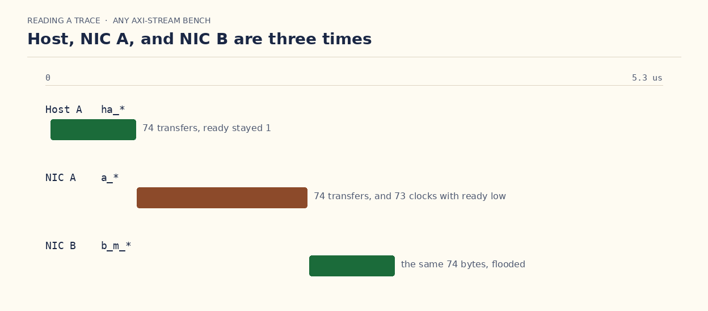
This shorter trace is two frames with a NIC on each port. The bytes are the first frame of ns1_iperf.pcap. Each bar is 74 real transfers. Zoom into a bar before you call it one beat.
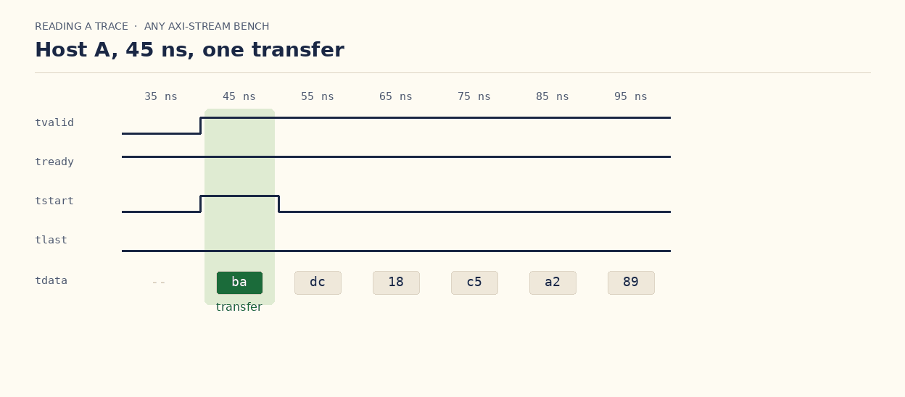
ha_tstart is 1, and both ha_tvalid and ha_tready are 1. The byte is ba, the first byte of the destination. That column is one transfer. The next column is dc.
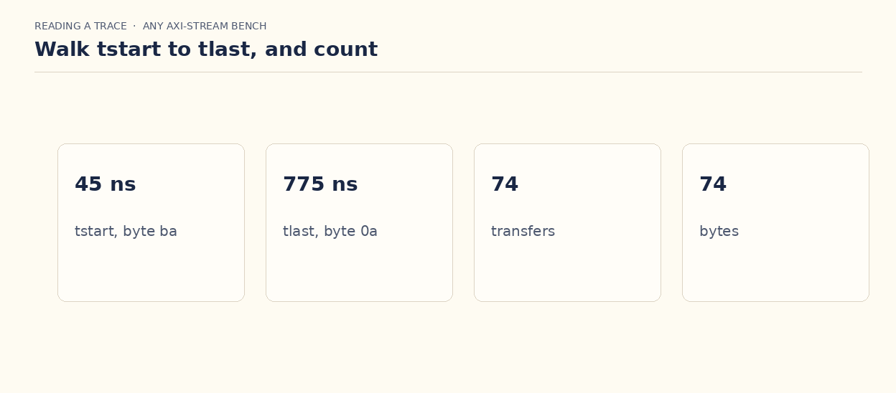
Host A runs from 45 ns to 775 ns. ha_tlast rises on the last column, byte 0a. Both pins are high on all 74 clocks, so the host made 74 transfers. The frame is 74 bytes.
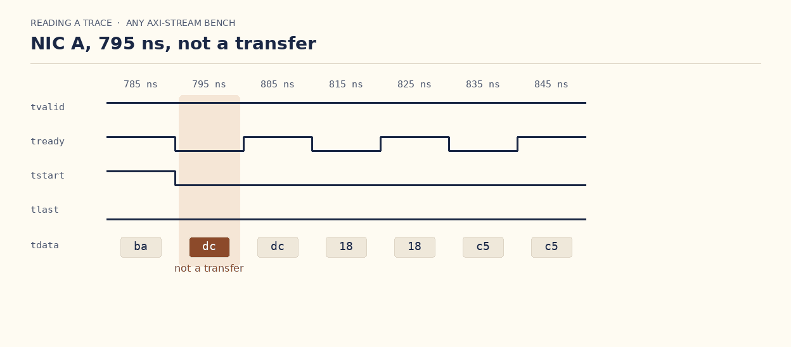
The same bytes show up on a_*, which is NIC A driving the bridge. At 795 ns a_tvalid is 1 and a_tready is 0, so dc does not move. Valid alone never counts.
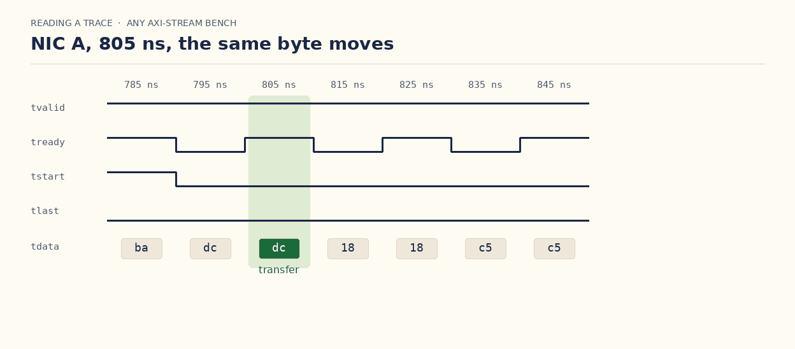
dc was offered at 795 ns and refused. One clock later a_tready is 1. That is the transfer. On any AXI-Stream trace, count a beat only in the column where both pins are high.
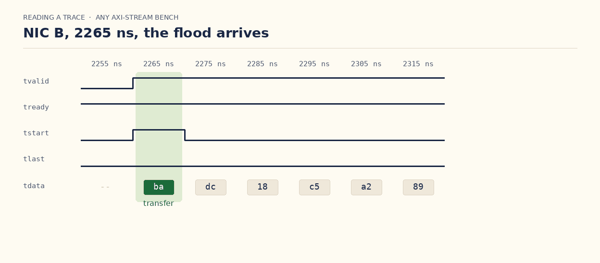
The bridge sends the frame out b_m_*. At 2265 ns b_m_tstart is 1 and both pins are high. The byte is ba again. NIC B takes the same 74 bytes the host sent, each one a transfer on this port.
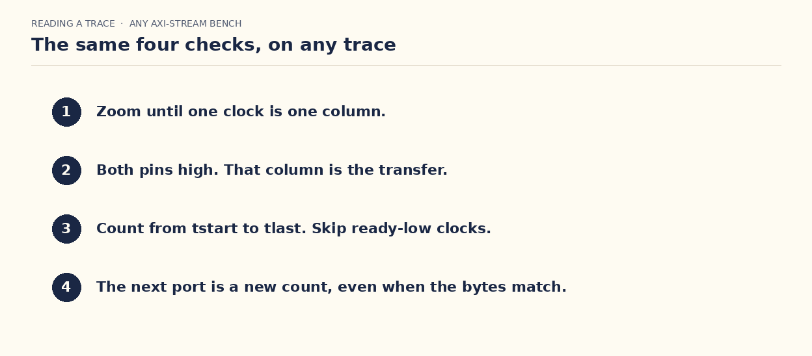
Open the VCD. Zoom until one clock is one column. A transfer is the column where tvalid and tready are both 1. A frame is tstart through tlast. Then follow those bytes to the next interface and count again.
The steps above stay. What follows is that same VCD opened in GTKWave, which is what make wave does. Click tb_l2br in the tree, type a prefix in the search box, and press Append. Each picture stays until you choose the next one.
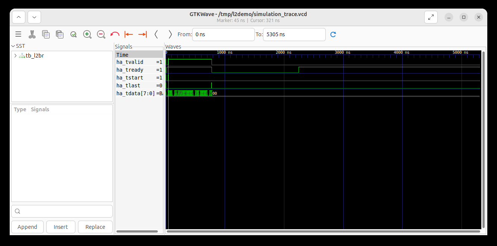
This is the window. The search box is at the lower left, under the tree. Nothing is typed in it yet. On the right, only the ha_ wires are appended, and the zoom is the whole file, 0 to 5305 ns. The frame is a band at the left. That band is not one transfer.
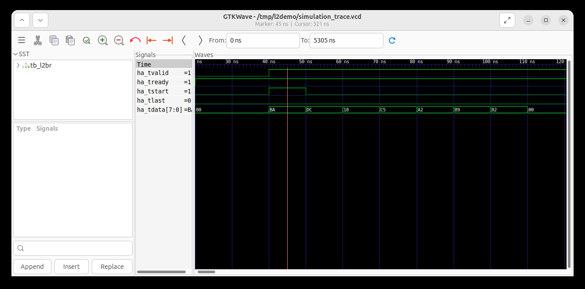
Type ha_ in the search box and press Append on ha_tvalid, ha_tready, ha_tstart, ha_tlast, and ha_tdata. Zoom until the ruler reads tens of nanoseconds. The marker is at 45 ns. Both pins are 1, ha_tstart is 1, and the byte is BA. The next byte is DC.
Each box is its own transfer. BA is only the first one. ha_tstart is high on that column and then falls. The next columns transfer DC, then 18, then C5, then A2, then 89, then 02, then 00, because ha_tvalid and ha_tready stay 1. ha_tlast is still 0 in this window, so the frame is not finished. Keep walking until the column where ha_tlast rises. That last byte is the last transfer. From tstart to tlast is one frame, one transfer per byte.
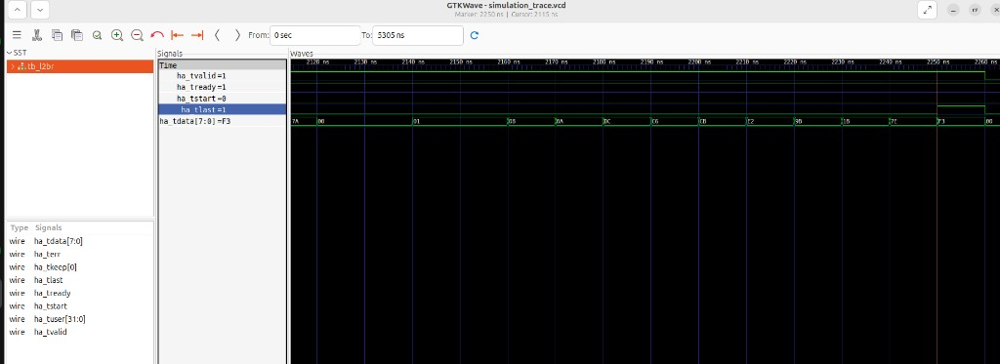
This column is a later frame, not the one that opened at 45 ns. ha_tvalid and ha_tready are both 1, ha_tstart is 0, and ha_tlast is 1, so F3 is the last transfer. That column is at 2255 ns. The same frame began at 1605 ns, where ha_tstart was 1 and the byte was BA. Both pins stay 1 on every column from that BA through this F3. There are 66 of them, so the frame moved 66 bytes.
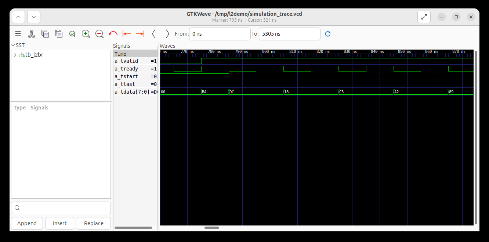
Clear the search and type a_t, so the list is port A into the bridge and not ha_ or a_m_. Append those wires. The marker is at 795 ns. a_tvalid is 1 and a_tready is 0, and the byte is still DC. That clock is not a transfer. The next time a_tready rises, DC moves.
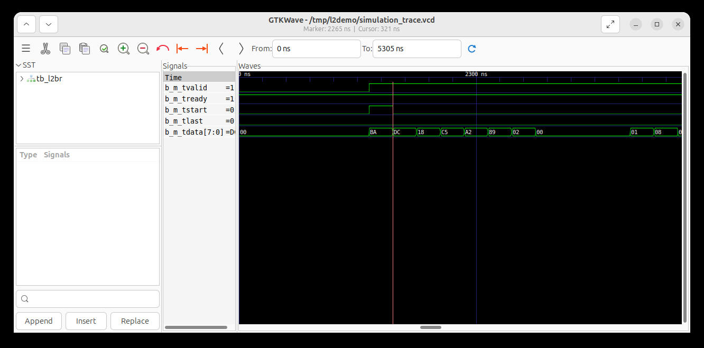
Clear the search and type b_m_. Append those wires. The marker is at 2265 ns. b_m_tvalid and b_m_tready are both 1, b_m_tstart marks the frame, and the bytes are the same BA, DC, 18 the host sent. Same filter, next port. Anyone can repeat it with make wave after the two-frame run.
The two digits in a box are one byte. ha_tdata is ha_tdata[7:0], eight bits. With the bus set to hex, one digit stands for four bits, so the box reads 00. That is a single byte whose value is 0. The next column that also reads 00 is the next byte.
Each column where tvalid and tready are both 1 is one byte. On the longer recording, the one that ends at 1,046,375 ns, the source address 02:00:00:00:00:01 is six columns. 02 is at 2365 ns. Then four columns of 00, at 2375, 2385, 2395, and 2405 ns. Then 01 at 2415 ns. Those four 00 boxes are four bytes.
Count the columns by hand. Start on the first column after that 00 at 2375 ns, and stop on the column where ha_tlast rises. On this frame that column is at 3325 ns and the byte is 00. Both pins stay 1, so every column counts. There are 95. The frame itself opened at 2305 ns on BA and is 103 bytes.
A 10 ns gap is one clock in this bench. The clock toggles every 5 ns, so one period is 10 ns, and one period moves one byte. The byte is taken on the rising edge, when both pins are 1. The falling edge is the other half of that same clock. The testbench changes tdata then, so the new byte is waiting, and the bridge takes it on the next rising edge. One full clock, high half and low half, is one byte.
Another trace uses its own clock. If that period is 4 ns, the columns are 4 ns apart, and you count those columns. The handshake is the same on any period: both pins high on the rising edge. A column where tvalid is 1 and tready is 0 holds the byte. It counts on the later column where both pins are 1.
Find the clock period first, then zoom until that gap is one column, and read the wave one column at a time. In this bench the gap is 10 ns. A byte is on that column when tvalid and tready are both 1. When tready is 0 the column still draws the byte, and the byte waits for the next column where both pins are high.